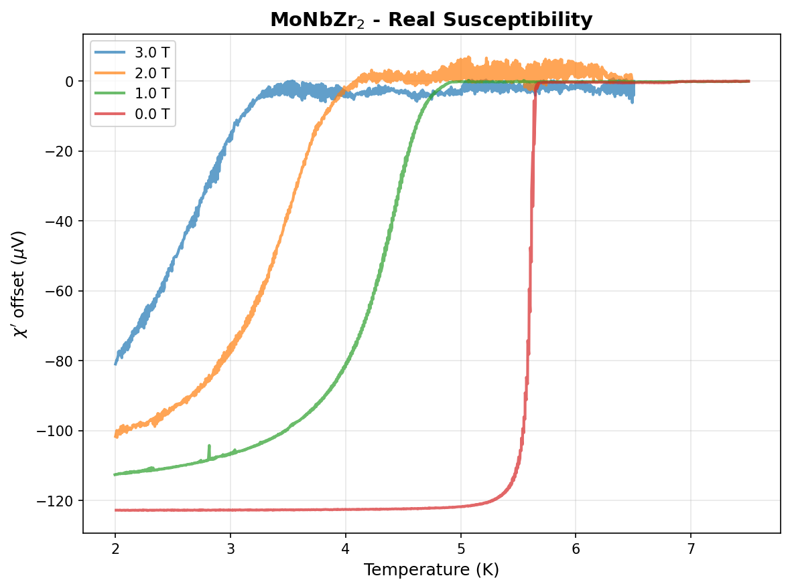
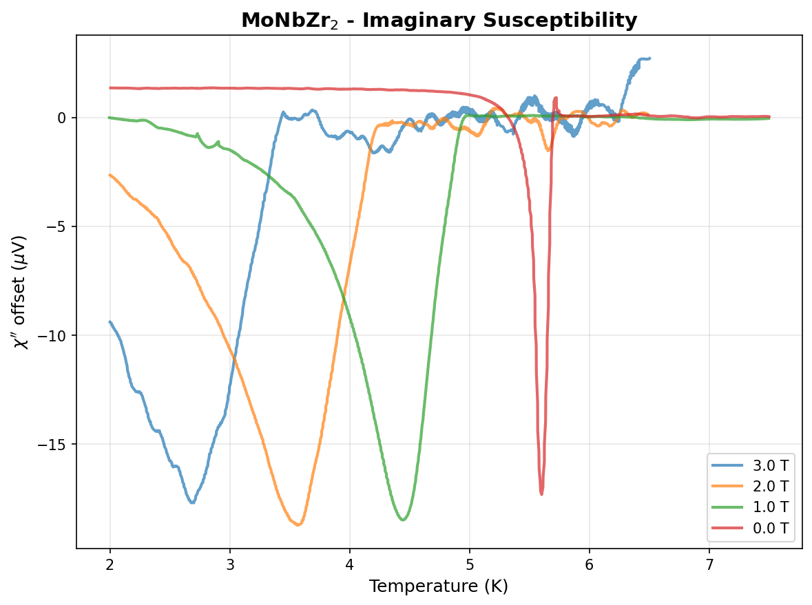
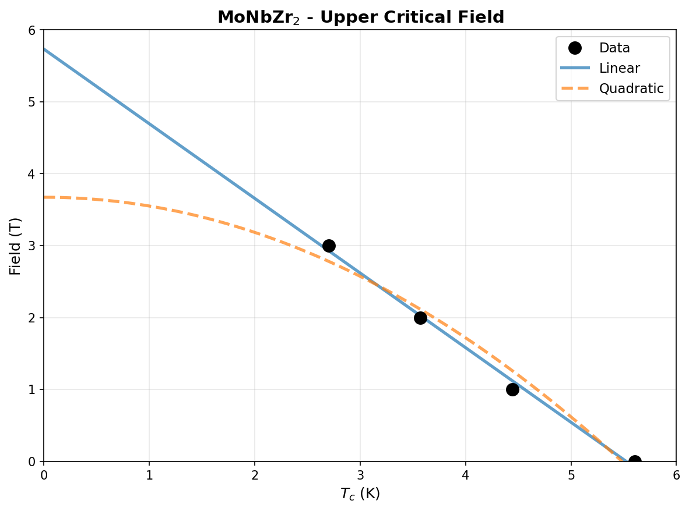
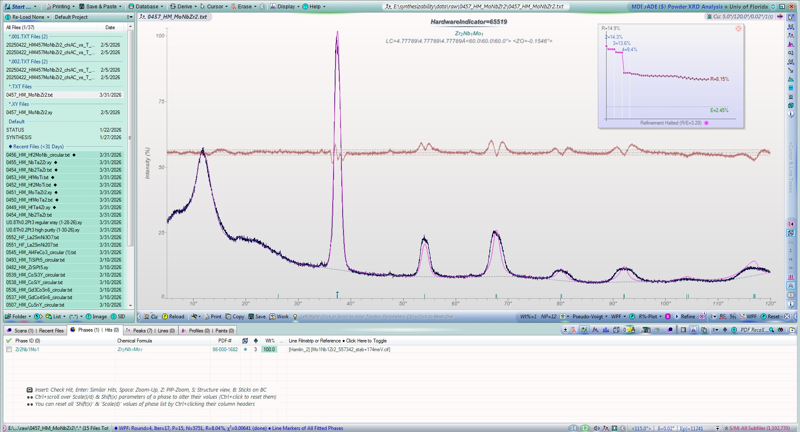
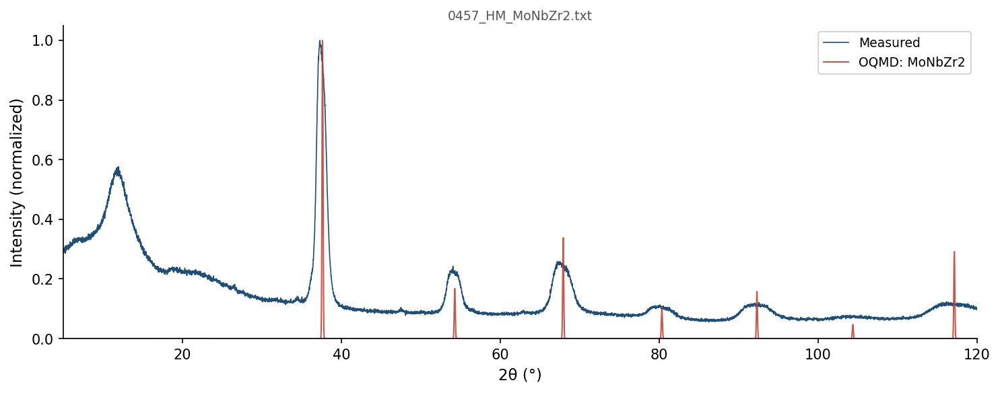
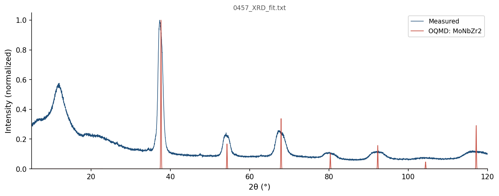
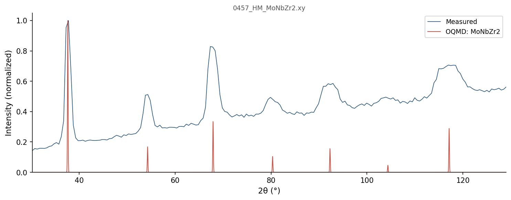

| Element | Expected (mol frac) | Measured (mol frac) | Δ (mol frac) | Δ (%) |
|---|---|---|---|---|
| Mo | 0.2500 | 0.2507 | +0.0007 | +0.07% |
| Nb | 0.2500 | 0.2499 | -0.0001 | -0.01% |
| Zr | 0.5000 | 0.4994 | -0.0006 | -0.06% |
343 entries in the Mo-Nb-Zr element system (12 on hull, 30 ICSD-tagged). Stability in meV/atom. Sorted most stable first.
| Composition | Stability (meV/atom) | ΔE (meV/atom) | ICSD | Space | Entry | CIF |
|---|---|---|---|---|---|---|
Mo2Zr1 |
-126 | -137.9 | Mo-Zr | 1592091 | CIF | |
Mo1Nb1 |
-14 | -116.3 | ✓ | Mo-Nb | 2036479 | CIF |
Mo3Nb5 |
-13 | -100.2 | Mo-Nb | 1986231 | CIF | |
Mo2Nb1 |
-11 | -104.2 | Mo-Nb | 1976423 | CIF | |
Mo13Nb3 |
-2 | -64.3 | Mo-Nb | 1339401 | CIF | |
Mo7Nb1 |
-1 | -44.4 | Mo-Nb | 1916338 | CIF | |
Mo15Nb1 |
+0 | -22.3 | Mo-Nb | 2132196 | CIF | |
Mo1 |
+0 | 0.0 | Mo | 1215167 | CIF | |
Nb1 |
+0 | 0.0 | Nb | 1521870 | CIF | |
Nb1 |
+0 | 0.0 | Nb | 1215170 | CIF | |
Nb1 |
+0 | 0.0 | Nb | 1521875 | CIF | |
Zr1 |
+0 | -0.2 | Zr | 1791927 | CIF | |
Nb1 |
+0 | 0.0 | ✓ | Nb | 685533 | CIF |
Mo1Nb1 |
+0 | -116.3 | Mo-Nb | 1339212 | CIF | |
Mo1Nb1 |
+0 | -116.3 | Mo-Nb | 1522223 | CIF | |
Mo1Nb1 |
+0 | -116.2 | Mo-Nb | 306419 | CIF | |
Nb1 |
+0 | 0.1 | Nb | 2162724 | CIF | |
Nb1 |
+0 | 0.1 | Nb | 2162619 | CIF | |
Mo1 |
+0 | 0.1 | Mo | 1522085 | CIF | |
Mo1 |
+0 | 0.1 | Mo | 1522090 | CIF | |
Zr1 |
+0 | 0.0 | ✓ | Zr | 67408 | CIF |
Mo2Zr1 |
+0 | -137.7 | ✓ | Mo-Zr | 17718 | CIF |
Mo1Nb1 |
+0 | -116.1 | Mo-Nb | 1991815 | CIF | |
Zr1 |
+0 | 0.1 | Zr | 758445 | CIF | |
Zr1 |
+0 | 0.1 | Zr | 758455 | CIF | |
Mo1 |
+0 | 0.3 | ✓ | Mo | 676469 | CIF |
Mo3Nb1 |
+0 | -81.1 | Mo-Nb | 1916188 | CIF | |
Zr1 |
+0 | 0.2 | ✓ | Zr | 8196 | CIF |
Zr1 |
+0 | 0.2 | Zr | 1215390 | CIF | |
Zr1 |
+0 | 0.2 | Zr | 758475 | CIF | |
Zr1 |
+0 | 0.2 | Zr | 758462 | CIF | |
Zr1 |
+0 | 0.2 | Zr | 758464 | CIF | |
Zr1 |
+0 | 0.3 | Zr | 758463 | CIF | |
Mo8Nb1 |
+0 | -39.0 | Mo-Nb | 1976509 | CIF | |
Mo3Nb1 |
+0 | -80.9 | ✓ | Mo-Nb | 2036482 | CIF |
Zr1 |
+0 | 0.3 | Zr | 758466 | CIF | |
Zr1 |
+0 | 0.3 | Zr | 758474 | CIF | |
Zr1 |
+0 | 0.3 | Zr | 758457 | CIF | |
Zr1 |
+1 | 0.3 | ✓ | Zr | 117515 | CIF |
Zr1 |
+1 | 0.3 | ✓ | Zr | 2030147 | CIF |
Zr1 |
+1 | 0.4 | Zr | 758448 | CIF | |
Zr1 |
+1 | 0.4 | Zr | 758450 | CIF | |
Zr1 |
+1 | 0.4 | Zr | 758465 | CIF | |
Zr1 |
+1 | 0.4 | Zr | 758449 | CIF | |
Zr1 |
+1 | 0.4 | Zr | 758470 | CIF | |
Zr1 |
+1 | 0.4 | Zr | 758456 | CIF | |
Zr1 |
+1 | 0.4 | Zr | 758453 | CIF | |
Zr1 |
+1 | 0.5 | Zr | 758472 | CIF | |
Zr1 |
+1 | 0.5 | Zr | 758461 | CIF | |
Zr1 |
+1 | 0.5 | Zr | 758471 | CIF | |
Zr1 |
+1 | 0.5 | Zr | 758458 | CIF | |
Zr1 |
+1 | 0.5 | Zr | 758451 | CIF | |
Zr1 |
+1 | 0.5 | Zr | 758454 | CIF | |
Zr1 |
+1 | 0.5 | Zr | 758460 | CIF | |
Zr1 |
+1 | 0.5 | Zr | 758473 | CIF | |
Zr1 |
+1 | 0.5 | Zr | 758452 | CIF | |
Zr1 |
+1 | 0.5 | Zr | 758446 | CIF | |
Zr1 |
+1 | 0.5 | Zr | 758444 | CIF | |
Zr1 |
+1 | 0.6 | Zr | 758459 | CIF | |
Zr1 |
+1 | 0.6 | Zr | 758447 | CIF | |
Zr1 |
+1 | 0.6 | Zr | 1926822 | CIF | |
Zr1 |
+1 | 1.0 | ✓ | Zr | 2031515 | CIF |
Mo3Nb1 |
+1 | -80.2 | Mo-Nb | 311999 | CIF | |
Zr1 |
+1 | 1.3 | Zr | 1801137 | CIF | |
Mo3Nb1 |
+2 | -79.0 | Mo-Nb | 1793442 | CIF | |
Zr1 |
+3 | 2.9 | Zr | 1215301 | CIF | |
Mo7Nb9 |
+6 | -101.8 | Mo-Nb | 1339732 | CIF | |
Mo7Nb3 |
+7 | -88.3 | Mo-Nb | 2160098 | CIF | |
Mo2Zr1 |
+9 | -129.3 | Mo-Zr | 1610089 | CIF | |
Mo3Nb1 |
+10 | -71.4 | Mo-Nb | 2080519 | CIF | |
Mo3Nb1 |
+10 | -71.4 | Mo-Nb | 2121051 | CIF | |
Mo1Nb1 |
+10 | -105.9 | Mo-Nb | 337961 | CIF | |
Mo3Nb1 |
+14 | -67.2 | Mo-Nb | 2086136 | CIF | |
Mo3Nb1 |
+14 | -67.2 | Mo-Nb | 2121458 | CIF | |
Mo3Nb1 |
+14 | -66.9 | Mo-Nb | 2082306 | CIF | |
Mo3Nb1 |
+14 | -66.9 | Mo-Nb | 2082447 | CIF | |
Mo1Nb3 |
+17 | -50.2 | ✓ | Mo-Nb | 2036480 | CIF |
Mo1Nb3 |
+17 | -50.2 | Mo-Nb | 310226 | CIF | |
Zr1 |
+20 | 19.5 | Zr | 758468 | CIF | |
Mo1Nb3 |
+20 | -46.9 | Mo-Nb | 2086000 | CIF | |
Mo1Nb3 |
+20 | -46.9 | Mo-Nb | 2121368 | CIF | |
Nb2Zr1 |
+20 | 20.4 | Nb-Zr | 1610000 | CIF | |
Mo1Nb3 |
+21 | -45.5 | Mo-Nb | 2080655 | CIF | |
Mo1Nb3 |
+22 | -45.1 | Mo-Nb | 2082456 | CIF | |
Mo1Nb3 |
+22 | -45.1 | Mo-Nb | 2082297 | CIF | |
Mo2Zr1 |
+24 | -114.3 | ✓ | Mo-Zr | 2033988 | CIF |
Mo2Zr1 |
+24 | -114.2 | Mo-Zr | 1609999 | CIF | |
Zr1 |
+26 | 26.2 | Zr | 1216106 | CIF | |
Mo1Nb1 |
+30 | -86.4 | Mo-Nb | 2080442 | CIF | |
Nb2Zr1 |
+35 | 35.0 | Nb-Zr | 1610090 | CIF | |
Mo1Nb1 |
+37 | -79.4 | Mo-Nb | 2082156 | CIF | |
Mo1Nb1 |
+37 | -79.4 | Mo-Nb | 2082147 | CIF | |
Mo1Nb1 |
+38 | -78.1 | Mo-Nb | 2085864 | CIF | |
Mo1Nb1 |
+39 | -77.5 | Mo-Nb | 2082597 | CIF | |
Mo1Nb1 |
+39 | -77.5 | ✓ | Mo-Nb | 2036481 | CIF |
Zr1 |
+40 | 39.7 | ✓ | Zr | 7509 | CIF |
Zr1 |
+40 | 39.7 | Zr | 1214589 | CIF | |
Zr1 |
+43 | 42.4 | Zr | 1215747 | CIF | |
Zr1 |
+48 | 48.2 | Zr | 1215480 | CIF | |
Nb1Zr1 |
+51 | 50.5 | Nb-Zr | 757306 | CIF | |
Nb1Zr1 |
+51 | 51.2 | Nb-Zr | 2082164 | CIF | |
Nb1Zr1 |
+51 | 51.2 | Nb-Zr | 2082203 | CIF | |
Nb2Zr1 |
+52 | 51.5 | Nb-Zr | 1592014 | CIF | |
Nb2Zr1 |
+52 | 51.6 | Nb-Zr | 1339117 | CIF | |
Nb3Zr1 |
+54 | 53.5 | Nb-Zr | 2086152 | CIF | |
Nb1Zr3 |
+54 | 54.0 | Nb-Zr | 2080733 | CIF | |
Nb3Zr1 |
+55 | 55.5 | Nb-Zr | 2080597 | CIF | |
Zr1 |
+56 | 56.0 | Zr | 1215836 | CIF | |
Zr1 |
+56 | 56.0 | Zr | 1214678 | CIF | |
Nb3Zr1 |
+60 | 59.6 | Nb-Zr | 2082353 | CIF | |
Nb3Zr1 |
+60 | 59.6 | Nb-Zr | 2082464 | CIF | |
Mo1Nb1 |
+63 | -53.6 | Mo-Nb | 2121114 | CIF | |
Mo1Nb1 |
+63 | -53.6 | Mo-Nb | 2084807 | CIF | |
Nb1Zr1 |
+70 | 69.8 | Nb-Zr | 2085880 | CIF | |
Nb1Zr2 |
+70 | 70.1 | Nb-Zr | 757317 | CIF | |
Nb1Zr1 |
+70 | 70.4 | Nb-Zr | 2080489 | CIF | |
Nb1Zr3 |
+72 | 72.3 | Nb-Zr | 2086016 | CIF | |
Nb1Zr1 |
+73 | 72.5 | Nb-Zr | 757297 | CIF | |
Nb3Zr1 |
+75 | 74.5 | Nb-Zr | 310264 | CIF | |
Nb1Zr1 |
+75 | 74.8 | Nb-Zr | 2084823 | CIF | |
Nb1 |
+76 | 75.9 | Nb | 1215883 | CIF | |
Zr1 |
+80 | 79.6 | ✓ | Zr | 9320 | CIF |
Zr1 |
+80 | 79.9 | Zr | 1215212 | CIF | |
Zr1 |
+81 | 80.3 | Zr | 1215925 | CIF | |
Nb1Zr1 |
+81 | 80.5 | Nb-Zr | 757294 | CIF | |
Nb1Zr1 |
+82 | 82.2 | Nb-Zr | 757302 | CIF | |
Nb3Zr4 |
+83 | 82.7 | Nb-Zr | 757295 | CIF | |
Nb1Zr1 |
+84 | 83.6 | Nb-Zr | 757299 | CIF | |
Mo1Zr2 |
+85 | 16.2 | Mo-Zr | 1450038 | CIF | |
Nb1Zr3 |
+85 | 85.2 | Nb-Zr | 2082314 | CIF | |
Nb1Zr3 |
+85 | 85.3 | Nb-Zr | 2082503 | CIF | |
Nb1Zr1 |
+86 | 85.7 | Nb-Zr | 757300 | CIF | |
Mo1Zr2 |
+88 | 18.6 | Mo-Zr | 757256 | CIF | |
Mo1Zr2 |
+88 | 18.6 | Mo-Zr | 757245 | CIF | |
Nb1Zr5 |
+89 | 88.9 | Nb-Zr | 757308 | CIF | |
Mo3Zr1 |
+90 | -13.0 | Mo-Zr | 1793440 | CIF | |
Zr1 |
+91 | 90.8 | Zr | 1214945 | CIF | |
Mo1Zr3 |
+93 | 40.8 | Mo-Zr | 2121373 | CIF | |
Mo1Zr3 |
+94 | 42.5 | Mo-Zr | 2080641 | CIF | |
Mo1Zr3 |
+94 | 42.6 | Mo-Zr | 2086008 | CIF | |
Mo1 |
+95 | 94.5 | Mo | 1280332 | CIF | |
Mo1 |
+95 | 94.5 | Mo | 1214989 | CIF | |
Nb1Zr1 |
+95 | 95.0 | Nb-Zr | 757321 | CIF | |
Nb1Zr1 |
+99 | 98.5 | Nb-Zr | 2082613 | CIF | |
Nb1Zr1 |
+99 | 98.6 | Nb-Zr | 757305 | CIF | |
Mo2Nb1Zr1 |
+101 | -11.1 | Mo-Nb-Zr | 448450 | CIF | |
Nb1Zr3 |
+104 | 103.7 | Nb-Zr | 757323 | CIF | |
Mo3Zr1 |
+104 | 0.8 | Mo-Zr | 311060 | CIF | |
Mo1Zr3 |
+104 | 52.5 | Mo-Zr | 757250 | CIF | |
Nb1Zr1 |
+105 | 104.6 | Nb-Zr | 2083279 | CIF | |
Nb1 |
+105 | 105.0 | Nb | 1214992 | CIF | |
Nb1 |
+105 | 105.0 | Nb | 1280310 | CIF | |
Mo3Zr1 |
+107 | 3.8 | Mo-Zr | 2121464 | CIF | |
Mo3Zr1 |
+107 | 3.8 | Mo-Zr | 2086144 | CIF | |
Nb1Zr3 |
+108 | 107.7 | Nb-Zr | 314796 | CIF | |
Mo1Nb2Zr1 |
+111 | 44.0 | Mo-Nb-Zr | 1139494 | CIF | |
Mo1Nb2Zr1 |
+111 | 44.1 | Mo-Nb-Zr | 1127200 | CIF | |
Nb1Zr2 |
+112 | 111.8 | Nb-Zr | 757309 | CIF | |
Mo1Zr1 |
+112 | 8.5 | Mo-Zr | 757242 | CIF | |
Mo1Nb2Zr1 |
+116 | 48.8 | Mo-Nb-Zr | 488014 | CIF | |
Nb1Zr3 |
+118 | 117.7 | Nb-Zr | 757314 | CIF | |
Mo3Zr1 |
+119 | 15.9 | Mo-Zr | 2121042 | CIF | |
Mo3Zr1 |
+119 | 15.9 | Mo-Zr | 2080505 | CIF | |
Mo3Zr1 |
+120 | 16.7 | Mo-Zr | 2082352 | CIF | |
Mo3Zr1 |
+120 | 16.7 | Mo-Zr | 2082455 | CIF | |
Mo1Zr1 |
+124 | 20.1 | Mo-Zr | 2120997 | CIF | |
Mo1Zr1 |
+124 | 20.1 | Mo-Zr | 2080488 | CIF | |
Mo1 |
+124 | 123.6 | Mo | 1215880 | CIF | |
Mo1Nb1Zr1 |
+126 | 44.5 | Mo-Nb-Zr | 2085643 | CIF | |
Mo1Zr3 |
+126 | 74.2 | Mo-Zr | 2082305 | CIF | |
Mo1Zr3 |
+126 | 74.2 | Mo-Zr | 2082502 | CIF | |
Nb1Zr1 |
+126 | 126.3 | Nb-Zr | 305559 | CIF | |
Nb1Zr3 |
+132 | 131.8 | Nb-Zr | 757311 | CIF | |
Nb1Zr3 |
+132 | 132.2 | Nb-Zr | 320806 | CIF | |
Mo1Zr1 |
+133 | 29.7 | Mo-Zr | 2082155 | CIF | |
Mo1Zr1 |
+133 | 29.7 | Mo-Zr | 2082202 | CIF | |
Zr1 |
+134 | 133.9 | Zr | 1214856 | CIF | |
Zr1 |
+137 | 136.3 | Zr | 1215034 | CIF | |
Zr1 |
+137 | 136.4 | Zr | 1280431 | CIF | |
Nb1Zr2 |
+137 | 136.6 | Nb-Zr | 757303 | CIF | |
Zr1 |
+137 | 136.7 | Zr | 1280432 | CIF | |
Mo2Nb1Zr1 |
+141 | 28.7 | Mo-Nb-Zr | 1140251 | CIF | |
Mo1Zr2 |
+142 | 73.4 | Mo-Zr | 757253 | CIF | |
Nb1Zr3 |
+143 | 142.5 | Nb-Zr | 345292 | CIF | |
Nb1Zr3 |
+143 | 142.5 | Nb-Zr | 304254 | CIF | |
Mo1Zr1 |
+143 | 39.2 | Mo-Zr | 757233 | CIF | |
Nb1Zr1 |
+143 | 142.8 | Nb-Zr | 757296 | CIF | |
Nb3Zr1 |
+143 | 143.0 | Nb-Zr | 1280369 | CIF | |
Nb1 |
+145 | 144.9 | ✓ | Nb | 2030157 | CIF |
Nb1Zr1 |
+145 | 145.0 | Nb-Zr | 757313 | CIF | |
Nb1 |
+147 | 147.2 | Nb | 1215705 | CIF | |
Mo1Nb1Zr2 |
+149 | 88.4 | Mo-Nb-Zr | 1128652 | CIF | |
Nb1Zr1 |
+149 | 149.2 | Nb-Zr | 757318 | CIF | |
Nb1Zr2 |
+149 | 149.4 | Nb-Zr | 757293 | CIF | |
Mo1Zr1 |
+150 | 46.6 | Mo-Zr | 757228 | CIF | |
Mo1Zr3 |
+151 | 98.9 | Mo-Zr | 757259 | CIF | |
Mo1Zr1 |
+151 | 47.9 | Mo-Zr | 757236 | CIF | |
Mo1Zr1 |
+154 | 50.3 | Mo-Zr | 2085872 | CIF | |
Mo3Zr4 |
+159 | 69.9 | Mo-Zr | 757231 | CIF | |
Mo1Zr3 |
+160 | 107.9 | Mo-Zr | 310856 | CIF | |
Nb1Zr1 |
+161 | 160.8 | Nb-Zr | 757298 | CIF | |
Mo1Zr1 |
+163 | 59.3 | Mo-Zr | 757230 | CIF | |
Nb1 |
+167 | 166.6 | Nb | 1214814 | CIF | |
Mo1Zr1 |
+167 | 63.8 | Mo-Zr | 757238 | CIF | |
Nb1Zr2 |
+169 | 168.8 | Nb-Zr | 757316 | CIF | |
Mo1Zr1 |
+171 | 67.1 | Mo-Zr | 757257 | CIF | |
Mo1Zr1 |
+171 | 67.1 | Mo-Zr | 757235 | CIF | |
Nb1 |
+174 | 173.6 | ✓ | Nb | 2030113 | CIF |
Mo1Nb1Zr2 |
+174 | 113.1 | Mo-Nb-Zr | 557342 | CIF | |
Mo1Zr1 |
+177 | 73.9 | Mo-Zr | 305962 | CIF | |
Mo1Zr1 |
+178 | 74.3 | ✓ | Mo-Zr | 2030400 | CIF |
Mo1Zr1 |
+178 | 74.9 | Mo-Zr | 1236151 | CIF | |
Nb1Zr1 |
+180 | 179.5 | Nb-Zr | 757319 | CIF | |
Nb1Zr1 |
+184 | 184.0 | Nb-Zr | 757312 | CIF | |
Nb3Zr1 |
+184 | 184.0 | Nb-Zr | 299722 | CIF | |
Nb3Zr4 |
+184 | 184.2 | Nb-Zr | 757307 | CIF | |
Zr1 |
+184 | 184.2 | Zr | 1215123 | CIF | |
Nb1Zr1 |
+188 | 188.0 | Nb-Zr | 757322 | CIF | |
Mo1Zr1 |
+190 | 87.0 | Mo-Zr | 2082605 | CIF | |
Mo1Zr1 |
+191 | 87.9 | Mo-Zr | 757241 | CIF | |
Mo1Zr1 |
+194 | 90.7 | Mo-Zr | 337504 | CIF | |
Mo1Zr5 |
+195 | 160.0 | Mo-Zr | 757244 | CIF | |
Mo1Zr1 |
+195 | 91.5 | Mo-Zr | 2084815 | CIF | |
Nb1 |
+198 | 197.7 | Nb | 1215259 | CIF | |
Mo2Nb1 |
+202 | 97.4 | Mo-Nb | 1592092 | CIF | |
Nb1 |
+202 | 202.0 | Nb | 1801139 | CIF | |
Nb1 |
+202 | 202.1 | ✓ | Nb | 2031499 | CIF |
Mo2Nb1 |
+210 | 106.1 | Mo-Nb | 1610044 | CIF | |
Nb1 |
+213 | 213.0 | Nb | 1214903 | CIF | |
Mo1Zr1 |
+213 | 109.7 | Mo-Zr | 757237 | CIF | |
Nb3Zr4 |
+215 | 214.8 | Nb-Zr | 1450712 | CIF | |
Mo1Nb3 |
+219 | 152.1 | Mo-Nb | 299684 | CIF | |
Mo2Nb1 |
+224 | 119.6 | Mo-Nb | 1609954 | CIF | |
Mo1Zr1 |
+227 | 123.3 | Mo-Zr | 757249 | CIF | |
Nb1Zr1 |
+232 | 231.9 | Nb-Zr | 757301 | CIF | |
Mo1Zr3 |
+233 | 181.2 | Mo-Zr | 300314 | CIF | |
Nb1Zr1 |
+233 | 233.2 | Nb-Zr | 757304 | CIF | |
Nb1Zr1 |
+237 | 236.6 | Nb-Zr | 1230506 | CIF | |
Nb1Zr1 |
+237 | 236.8 | Nb-Zr | 1236154 | CIF | |
Nb1Zr1 |
+239 | 239.2 | Nb-Zr | 326643 | CIF | |
Nb1Zr2 |
+251 | 251.3 | Nb-Zr | 757320 | CIF | |
Mo1Zr2 |
+252 | 183.1 | Mo-Zr | 757229 | CIF | |
Mo1Zr3 |
+256 | 204.5 | Mo-Zr | 321602 | CIF | |
Mo1Zr3 |
+256 | 204.6 | Mo-Zr | 757247 | CIF | |
Mo1 |
+268 | 267.8 | Mo | 1214811 | CIF | |
Nb1 |
+268 | 268.4 | Nb | 1214636 | CIF | |
Nb3Zr1 |
+272 | 271.9 | Nb-Zr | 325338 | CIF | |
Mo1Zr1 |
+272 | 169.1 | Mo-Zr | 757254 | CIF | |
Mo1Zr3 |
+274 | 221.7 | ✓ | Mo-Zr | 2030399 | CIF |
Mo1Zr2 |
+274 | 205.0 | Mo-Zr | 757239 | CIF | |
Mo1Zr3 |
+274 | 222.5 | Mo-Zr | 346088 | CIF | |
Nb3Zr1 |
+289 | 288.9 | Nb-Zr | 349824 | CIF | |
Nb1 |
+291 | 291.4 | Nb | 1215438 | CIF | |
Nb1 |
+293 | 293.0 | Nb | 1216064 | CIF | |
Mo1Zr1 |
+293 | 189.7 | Mo-Zr | 757232 | CIF | |
Mo1Nb1 |
+294 | 177.5 | Mo-Nb | 2083263 | CIF | |
Nb1 |
+296 | 296.2 | ✓ | Nb | 2029911 | CIF |
Nb1 |
+297 | 297.4 | Nb | 1215348 | CIF | |
Zr1 |
+298 | 297.8 | Zr | 1214767 | CIF | |
Nb2Zr1 |
+303 | 302.9 | Nb-Zr | 1520527 | CIF | |
Mo1Zr1 |
+303 | 199.6 | Mo-Zr | 2121090 | CIF | |
Mo1Zr1 |
+303 | 199.6 | Mo-Zr | 2083271 | CIF | |
Mo1 |
+308 | 307.7 | Mo | 1214900 | CIF | |
Nb1 |
+322 | 321.8 | Nb | 1214547 | CIF | |
Nb1 |
+322 | 321.8 | ✓ | Nb | 676151 | CIF |
Mo3Zr4 |
+322 | 233.3 | Mo-Zr | 757243 | CIF | |
Nb1 |
+324 | 323.6 | Nb | 1215794 | CIF | |
Mo3Nb1 |
+325 | 243.6 | Mo-Nb | 301457 | CIF | |
Mo3Zr1 |
+328 | 224.8 | ✓ | Mo-Zr | 17719 | CIF |
Mo1 |
+330 | 329.9 | ✓ | Mo | 2030156 | CIF |
Mo1 |
+334 | 334.1 | Mo | 1215702 | CIF | |
Nb1 |
+344 | 343.7 | Nb | 1215081 | CIF | |
Mo1Zr1 |
+344 | 241.0 | Mo-Zr | 757234 | CIF | |
Mo1Zr2 |
+361 | 291.6 | Mo-Zr | 757252 | CIF | |
Mo1 |
+362 | 362.4 | Mo | 1215256 | CIF | |
Mo1 |
+366 | 366.0 | Mo | 1214633 | CIF | |
Mo3Zr1 |
+369 | 265.3 | Mo-Zr | 300518 | CIF | |
Mo1Zr1 |
+381 | 277.7 | Mo-Zr | 757248 | CIF | |
Mo1Nb1 |
+382 | 265.6 | Mo-Nb | 327503 | CIF | |
Mo2Zr1 |
+386 | 248.1 | ✓ | Mo-Zr | 2033990 | CIF |
Mo1Nb3 |
+397 | 330.2 | Mo-Nb | 322541 | CIF | |
Mo1 |
+406 | 405.7 | ✓ | Mo | 2031498 | CIF |
Mo1Zr1 |
+410 | 306.4 | Mo-Zr | 757240 | CIF | |
Mo1Zr1 |
+411 | 307.8 | Mo-Zr | 757258 | CIF | |
Mo1 |
+416 | 415.6 | ✓ | Mo | 676152 | CIF |
Mo1 |
+416 | 416.0 | Mo | 1214544 | CIF | |
Mo1 |
+421 | 420.8 | ✓ | Mo | 2030243 | CIF |
Nb1Zr2 |
+421 | 420.8 | Nb-Zr | 1609959 | CIF | |
Mo1 |
+422 | 422.1 | Mo | 1215435 | CIF | |
Mo1Zr1 |
+425 | 322.0 | Mo-Zr | 327046 | CIF | |
Mo1 |
+429 | 429.0 | Mo | 1216061 | CIF | |
Mo1 |
+433 | 433.4 | ✓ | Mo | 2030388 | CIF |
Mo1 |
+434 | 434.3 | Mo | 1215345 | CIF | |
Mo1Nb1 |
+438 | 322.2 | Mo-Nb | 1243628 | CIF | |
Zr1 |
+439 | 438.5 | Zr | 1277957 | CIF | |
Mo1Nb3 |
+440 | 373.0 | Mo-Nb | 347027 | CIF | |
Nb1 |
+442 | 442.5 | Nb | 1214725 | CIF | |
Nb1Zr2 |
+448 | 448.2 | Nb-Zr | 1610049 | CIF | |
Mo1 |
+458 | 458.0 | Mo | 1215791 | CIF | |
Nb1Zr1 |
+474 | 473.7 | Nb-Zr | 337101 | CIF | |
Mo3Nb1 |
+483 | 401.4 | Mo-Nb | 320768 | CIF | |
Zr1 |
+484 | 483.8 | Zr | 1215658 | CIF | |
Nb1Zr2 |
+497 | 496.4 | Nb-Zr | 1591940 | CIF | |
Mo3Nb1 |
+506 | 424.3 | Mo-Nb | 345254 | CIF | |
Mo1Nb1 |
+510 | 394.1 | Mo-Nb | 1230343 | CIF | |
Mo1Nb2 |
+514 | 425.0 | Mo-Nb | 1592015 | CIF | |
Mo3Zr1 |
+525 | 422.0 | Mo-Zr | 321398 | CIF | |
Mo1Nb2 |
+526 | 437.2 | Mo-Nb | 1610035 | CIF | |
Mo1Nb2 |
+531 | 442.3 | Mo-Nb | 1609945 | CIF | |
Mo1Zr1 |
+540 | 436.2 | Mo-Zr | 1230383 | CIF | |
Mo1Zr1 |
+541 | 437.5 | Mo-Zr | 1236152 | CIF | |
Mo1 |
+543 | 542.9 | Mo | 1215078 | CIF | |
Mo3Zr1 |
+582 | 478.8 | Mo-Zr | 345884 | CIF | |
Mo3Zr1 |
+582 | 478.9 | ✓ | Mo-Zr | 2030401 | CIF |
Mo1Nb1Zr1 |
+598 | 516.5 | Mo-Nb-Zr | 883038 | CIF | |
Nb1 |
+601 | 601.3 | Nb | 1215616 | CIF | |
Mo1Zr2 |
+701 | 631.8 | Mo-Zr | 1609950 | CIF | |
Mo1Zr2 |
+733 | 663.6 | Mo-Zr | 1610040 | CIF | |
Mo1Nb2 |
+742 | 653.3 | Mo-Nb | 1415519 | CIF | |
Mo1Nb2Zr2 |
+770 | 716.8 | Mo-Nb-Zr | 1235460 | CIF | |
Mo1Zr2 |
+781 | 712.0 | Mo-Zr | 1591941 | CIF | |
Mo1 |
+835 | 835.0 | Mo | 1215613 | CIF | |
Mo1Nb1Zr1 |
+851 | 770.1 | Mo-Nb-Zr | 919115 | CIF | |
Mo1Nb1 |
+930 | 814.2 | Mo-Nb | 1243627 | CIF | |
Mo1 |
+937 | 937.0 | Mo | 1214722 | CIF | |
Nb1Zr1 |
+981 | 980.7 | Nb-Zr | 1104744 | CIF | |
Mo1Zr1 |
+1075 | 971.8 | Mo-Zr | 1105147 | CIF | |
Mo1Nb1 |
+1110 | 993.4 | Mo-Nb | 1105604 | CIF | |
Zr1 |
+1140 | 1139.4 | Zr | 1216014 | CIF | |
Mo2Nb1 |
+1185 | 1080.7 | Mo-Nb | 1415518 | CIF | |
Mo1Nb1Zr1 |
+1252 | 1170.8 | Mo-Nb-Zr | 988440 | CIF | |
Mo1 |
+1303 | 1302.7 | Mo | 1215969 | CIF | |
Nb1 |
+1385 | 1385.1 | Nb | 1215972 | CIF | |
Mo1 |
+2237 | 2237.3 | Mo | 1215524 | CIF | |
Zr1 |
+2410 | 2409.6 | Zr | 1215569 | CIF | |
Mo1Zr2 |
+2436 | 2367.4 | Mo-Zr | 1241599 | CIF | |
Mo1Nb1 |
+2482 | 2365.6 | Mo-Nb | 1223372 | CIF | |
Mo1Zr1 |
+2515 | 2411.3 | Mo-Zr | 1223412 | CIF | |
Nb1Zr1 |
+2536 | 2536.2 | Nb-Zr | 1223535 | CIF | |
Nb1 |
+2545 | 2544.7 | Nb | 1215527 | CIF | |
Nb1Zr2 |
+2670 | 2669.9 | Nb-Zr | 1241124 | CIF | |
Mo1Nb2 |
+3439 | 3350.3 | Mo-Nb | 1236875 | CIF | |
Mo2Nb1 |
+3831 | 3727.1 | Mo-Nb | 1236876 | CIF |



| Model | Hc2(0) (T) | Tc (K) |
|---|---|---|
| Linear | 5.732 | 5.525 |
| Quadratic | 3.673 | 5.484 |

| Phase | Formula | Crystal System | Space Group | Lattice Parameters (Å / °) | Bragg-R |
|---|---|---|---|---|---|
| Zr2Nb1Mo1 | Zr2Nb1Mo1 | Triclinic | P1 (1) | a = 4.8(82) b = 4.8(71) c = 4.8(71) | 8.04% |



Nb0.38Zr0.62
| Tc = 8.70 K
| 10.1103/PhysRev.158.340
Mo0.15Nb0.85
| Tc = 5.85 K
| 10.1103/PhysRevLett.28.681
119 known superconductor(s) in the MoNbZr2 element system. Sorted by Tc descending. ■ closest composition ■ closest Tc
| Compound | Formula | Tc (K) | Reference |
|---|---|---|---|
| Nb0.75Zr0.25 | Nb0.75Zr0.25 |
11.00 | 10.1103/PhysRev.158.340 |
| Zr1-xNbx | Nb0.8Zr0.2 |
10.90 | 10.1103/PhysRev.123.1569 |
| Nb0.85Zr0.15 | Nb0.85Zr0.15 |
10.80 | 10.1143/JPSJ.22.238 |
| Nb0.66Zr0.33 | Nb0.66Zr0.33 |
10.80 | Search |
| Nb0.75Zr0.25 | Nb0.75Zr0.25 |
10.80 | Search |
| Zr1-xNbx | Nb0.7Zr0.3 |
10.80 | 10.1103/PhysRev.123.1569 |
| Nb0.5Zr0.5 | Nb0.5Zr0.5 |
10.75 | Search |
| Nb0.6Zr0.4 | Nb0.6Zr0.4 |
10.75 | Search |
| Zr1-xNbx | Nb0.9Zr0.1 |
10.70 | 10.1103/PhysRev.123.1569 |
| Zr1-xNbx | Nb0.75Zr0.25 |
10.70 | Search |
| Nb1-xZrx | Nb0.75Zr0.25 |
10.60 | 10.1143/JPSJ.22.238 |
| Nb1-xZrx | Nb0.65Zr0.35 |
10.60 | 10.1143/JPSJ.22.238 |
| Nb0.25Zr0.75 | Nb0.25Zr0.75 |
10.45 | Search |
| Zr1-xNbx | Nb0.5Zr0.5 |
10.40 | Search |
| Zr1-xNbx | Nb0.6Zr0.4 |
10.30 | 10.1103/PhysRev.123.1569 |
| Zr1-xNbx | Nb0.5Zr0.5 |
10.30 | Search |
| Nb50Zr50 | Nb50Zr50 |
10.20 | Search |
| Nb0.68Zr0.32 | Nb0.68Zr0.32 |
10.05 | Search |
| Nb50.35Zr44.45Mo5.2 | Nb50.35Zr44.45Mo5.2 |
9.90 | Search |
| Nb50.9Zr48.05Mo1.05 | Nb50.9Zr48.05Mo1.05 |
9.80 | Search |
| Nb | Nb1 |
9.71 | 10.1103/PhysRevB.72.064503 |
| Nb1-xZrx | Nb0.5Zr0.5 |
9.70 | 10.1143/JPSJ.22.238 |
| Nb | Nb1 |
9.47 | 10.1103/PhysRevB.72.064503 |
| Zr1-xNbx | Nb0.5Zr0.5 |
9.46 | 10.1103/PhysRev.123.1569 |
| Zr1-xNbx | Nb0.35Zr0.65 |
9.45 | Search |
| Nb | Nb1 |
9.40 | Search |
| Nb | Nb1 |
9.40 | Search |
| Nb | Nb1 |
9.27 | 10.1103/PhysRevB.9.108 |
| Nb | Nb1 |
9.25 | 10.1103/PhysRev.149.231 |
| Nb1-xOx | Nb99.976O0.024 |
9.23 | 10.1103/PhysRevB.9.888 |
| Nb | Nb1 |
9.23 | Search |
| Nb | Nb1 |
9.21 | 10.1103/PhysRev.176.562 |
| Nb | Nb1 |
9.20 | 10.1103/PhysRevLett.79.4262 |
| Nb0.2Zr0.8 | Nb0.2Zr0.8 |
9.20 | Search |
| Nb | Nb1 |
9.20 | 10.1103/PhysRev.123.1569 |
| Nb | Nb1 |
9.20 | 10.1143/JPSJ.22.238 |
| Nb | Nb1 |
9.18 | Search |
| Nb | Nb1 |
9.16 | Search |
| Nb | Nb1 |
9.10 | Search |
| Nb | Nb1 |
9.09 | 10.1103/PhysRevB.72.064503 |
| Nb1-xOx | Nb99.861O0.139 |
9.03 | 10.1103/PhysRevB.9.888 |
| Zr1-xNbx | Nb0.4Zr0.6 |
8.86 | 10.1103/PhysRev.123.1569 |
| Nb | Nb1 |
8.81 | 10.1103/PhysRevB.72.064503 |
| Nb50.2Zr39.4Mo10.4 | Nb50.2Zr39.4Mo10.4 |
8.80 | Search |
| Nb | Nb1 |
8.80 | Search |
| NB0.38Zr0.62 | Nb0.38Zr0.62 |
8.70 | 10.1103/PhysRev.158.340 |
| Zr1-xNbx | Nb0.25Zr0.75 |
8.60 | Search |
| Mo0.02Nb0.98 | Mo0.02Nb0.98 |
8.58 | Search |
| Nb1-xMox | Mo0.02Nb0.98 |
8.58 | Search |
| Nb1-xOx | Nb99.445O0.555 |
8.50 | 10.1103/PhysRevB.9.888 |
| Nb25Zr75 | Nb25Zr75 |
8.30 | Search |
| Nb1-xZrx | Nb0.25Zr0.75 |
8.30 | 10.1143/JPSJ.22.238 |
| Nb1-xMox | Mo0.02Nb0.98 |
8.24 | 10.1103/PhysRev.123.1569 |
| Nb1-xOx | Nb99.078O0.922 |
8.10 | 10.1103/PhysRevB.9.888 |
| Mo0.05Nb0.95 | Mo0.05Nb0.95 |
8.00 | 10.1103/PhysRev.158.340 |
| Nb0.2Zr0.8 | Nb0.2Zr0.8 |
8.00 | Search |
| Nb | Nb1 |
7.95 | 10.1103/PhysRevB.72.064503 |
| Nb1-xOx | Nb98.68O1.32 |
7.85 | 10.1103/PhysRevB.9.888 |
| Nb1-xMox | Mo0.05Nb0.95 |
7.63 | 10.1103/PhysRev.123.1569 |
| Nb0.1Zr0.9 | Nb0.1Zr0.9 |
7.60 | Search |
| Nb1-xOx | Nb98O2 |
7.33 | 10.1103/PhysRevB.9.888 |
| Mo3O5 | Mo3O5 |
7.20 | Search |
| Nb | Nb1 |
7.13 | 10.1103/PhysRevB.72.064503 |
| Nb1-xMox | Mo0.1Nb0.9 |
6.72 | 10.1103/PhysRev.123.1569 |
| (Nb,Zr) | Nb0.15Zr0.85 |
6.50 | Search |
| Nb0.13Zr0.87 | Nb0.13Zr0.87 |
6.42 | Search |
| Mo0.1Nb0.9 | Mo0.1Nb0.9 |
6.38 | 10.1103/PhysRev.173.504 |
| NB0.15Zr0.85 | Nb0.15Zr0.85 |
6.20 | Search |
| Nb1-xOx | Nb96.5O3.5 |
6.13 | 10.1103/PhysRevB.9.888 |
| (Nb,Mo) | Mo0.15Nb0.85 |
5.85 | 10.1103/PhysRevLett.28.681 |
| Mo0.15Nb0.85 | Mo0.15Nb0.85 |
5.30 | Search |
| Nb49.8Zr24.45Mo25.75 | Nb49.8Zr24.45Mo25.75 |
5.30 | Search |
| Nb1-xMox | Mo0.15Nb0.85 |
5.30 | Search |
| Zr1-xMox | Mo0.202Zr0.798 |
5.25 | Search |
| Zr1-xMox | Zr0.8Mo0.2 |
5.18 | Search |
| Zr1-xMox | Mo8.75Zr91.25 |
5.00 | 10.1143/JPSJ.36.1349 |
| Zr1-xPdx | Zr0.9Mo0.1 |
4.92 | Search |
| Zr1-xMox | Mo13Zr87 |
4.91 | 10.1143/JPSJ.36.1349 |
| (Zr,Mo) | Mo0.07Zr0.93 |
4.91 | 10.1103/PhysRevB.30.1253 |
| Nb0.04Zr0.96 | Nb0.04Zr0.96 |
4.90 | Search |
| Mo2Zr1 | Mo2Zr1 |
4.75 | Search |
| Zr1-xMox | Mo6.86Zr93.14 |
4.74 | 10.1143/JPSJ.36.1349 |
| Nb1-xMox | Mo0.2Nb0.8 |
4.57 | 10.1103/PhysRev.123.1569 |
| ZrMo2 | Mo2Zr1 |
4.57 | Search |
| (Zr,Mo) | Mo0.04Zr0.96 |
4.47 | 10.1103/PhysRevB.30.1253 |
| Mo2Zr1 | Mo2Zr1 |
4.27 | Search |
| Mo0.2Nb0.8 | Mo0.2Nb0.8 |
4.23 | Search |
| Nb1-xMox | Mo0.2Nb0.8 |
4.23 | Search |
| Zr1-xMox | Mo0.059Zr0.941 |
4.15 | Search |
| Zr1-xAlx | Zr0.8Mo0.2 |
4.10 | Search |
| Zr1-xMox | Mo5.22Zr94.78 |
4.00 | 10.1143/JPSJ.36.1349 |
| Zr1-xGex | Zr0.9Mo0.1 |
3.68 | Search |
| a-Zr | Zr1 |
3.50 | Search |
| Mo0.25Nb0.75 | Mo0.25Nb0.75 |
3.47 | Search |
| (Nb,Mo) | Mo0.25Nb0.75 |
3.47 | Search |
| Nb1-xMox | Mo0.3Nb0.7 |
2.67 | 10.1103/PhysRev.123.1569 |
| Zr1-xMox | Mo3.95Zr96.05 |
2.53 | 10.1143/JPSJ.36.1349 |
| Nb1-xMox | Mo0.3Nb0.7 |
2.48 | 10.1103/PhysRev.130.2177 |
| Zr1-xMox | Mo3.29Zr96.71 |
2.12 | 10.1143/JPSJ.36.1349 |
| Zr1-xNbx | Nb0.005Zr0.995 |
1.86 | Search |
| Zr1-xMox | Mo0.67Zr0.33 |
1.56 | Search |
| Nb1O1 | Nb1O1 |
1.50 | Search |
| O1b1 | Nb1O1 |
1.39 | Search |
| Nb1O1 | Nb1O1 |
1.25 | Search |
| Mo | Mo1 |
0.92 | Search |
| omega-Zr | Zr1 |
0.92 | Search |
| Mo | Mo1 |
0.92 | Search |
| Mo | Mo1 |
0.92 | 10.1103/PhysRev.129.1025 |
| Mo1 | Mo1 |
0.92 | Search |
| Mo | Mo1 |
0.90 | Search |
| Mo0.4Nb0.6 | Mo0.4Nb0.6 |
0.60 | Search |
| (Nb,Mo) | Mo0.4Nb0.6 |
0.60 | 10.1103/PhysRevLett.28.681 |
| Zr | Zr1 |
0.55 | Search |
| Zr | Zr1 |
0.52 | 10.1143/JPSJ.59.3843 |
| alpha-Zr | Zr1 |
0.52 | Search |
| Zr | Zr1 |
0.49 | Search |
| Mo2Zr1 | Mo2Zr1 |
0.12 | Search |
| (Nb,Mo) | Mo0.8Nb0.2 |
0.10 | 10.1103/PhysRevLett.28.681 |
| Mo0.7Nb0.3 | Mo0.7Nb0.3 |
0.02 | 10.1103/PhysRevLett.11.6 |